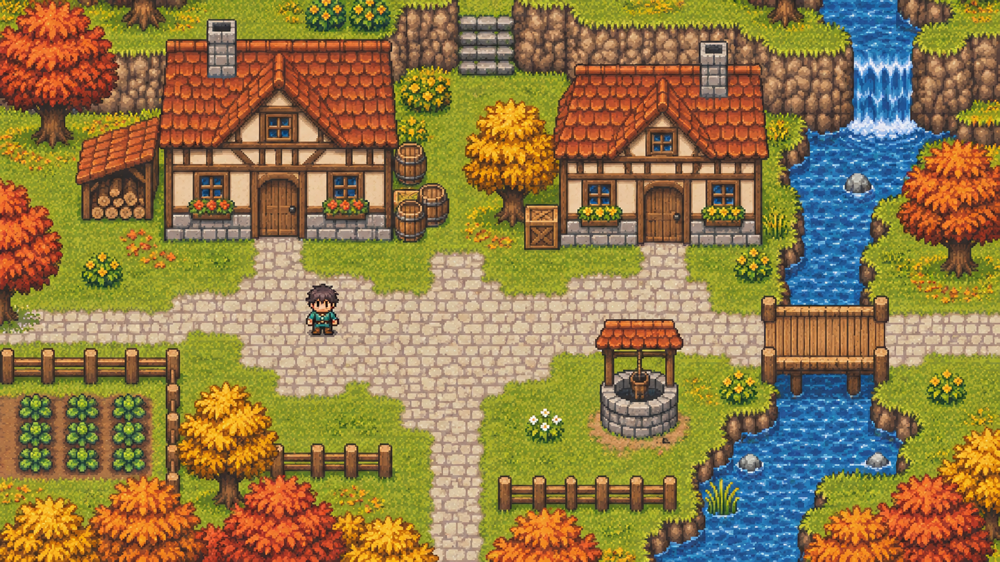

같은 화면, 다른 아이콘
가운데 손잡이를 끌면 Lucide와 Playglyph가 바뀝니다

체력, 코인, 보석과 장비 아이콘을 비교합니다. 왼쪽·오른쪽 방향키로 조절하고, Home은 Playglyph 전체, End는 Lucide 전체를 표시합니다.
스타일과 재질
아이콘을 누르면 HTML이 복사됩니다
라이브러리 구성
- 게임 UI 아이콘 134종
- 체력, 재화, 장비, 보상, 메뉴
- 재질 10가지
- wood, stone, steel, gold, bronze, silver, lava, poison, arcane, holy
- 별칭 814개
- Lucide, Font Awesome, Material 이름 그대로
- 캔버스와 엔진
- Canvas, Phaser, Pixi ·
toImage,toCanvas
시작하기
<script src="{CDN}/playglyph.js"></script>
<i data-pg="settings"></i>
<i data-pg="coin" data-style="sticker" data-size="32"></i>
<i data-pg="shield" data-style="sticker" data-material="wood"></i>